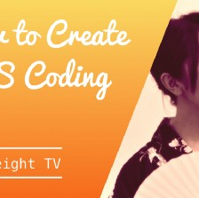
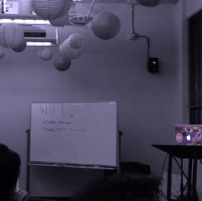
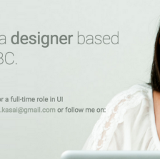

Jul 29, 2018
How to Market Yourself for Job Hunting
I was a guest speaker at Langara College and gave a talk in front of about 30 students from Web and Mobile App Design and Development course at the end of November 2017. I talked about how to market yourself for job...
Apr 26, 2017
How to Create CSS Coding Test
I spoke at a Code & Coffee meetup in Vancouver, BC recently. I talked about how I created my CSS coding tests. Here’s the video of my talk, along with the slides: Video Slides Links Button Test Demo Positioning Test Demo 21...

feb 20, 2015
How to Market Micro Open Source Projects
Today, I spoke at a Code & Coffee meetup in Vancouver, BC. I talked about how I marketed my micro open source projects. Here’s the video of my talk, along with the slides: Video Slides Links Purplecoat.js Demo Codepen...

Feb 17, 2015
21 CSS techniques I used for my new about me page
Recently, I designed my “about me” page without using any CSS frameworks. Here are some of the CSS techniques I used, along with the resources to learn more about them. Here’s the link to my “about me” page...

Feb 7, 2015
My Adventure as a UI Designer: From Tokyo, Japan to Vancouver, BC (Nov 2014 — Feb 2015)
In Fall 2014, after working as a junior product designer in Tokyo, Japan for 1 year, I decided to move to Vancouver, BC for new challenges. Here are th...